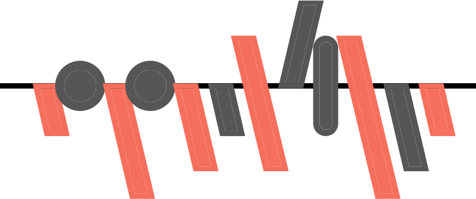

Grup V
| Club | Forma | Class. | Punts | Ascens | Asc.Dir. | Playoff | Descens | F | C | Qual. |
|---|---|---|---|---|---|---|---|---|---|---|
| Cornellà | 2.5 | 64.5 | 47.1 | 37.1 | 57.1 | 0.0 | 1.8 | 1.0 | 74.4 | |
| L’Escala |

|
3.1 | 62.3 | 31.1 | 21.6 | 68.2 | 0.0 | 1.4 | 0.9 | 69.7 |
| Badalona |

|
3.1 | 62.0 | 32.0 | 22.8 | 66.0 | 0.0 | 1.2 | 0.8 | 68.4 |
| L’Hospitalet |

|
3.9 | 59.7 | 21.8 | 12.4 | 67.7 | 0.0 | 1.5 | 0.9 | 71.0 |
| Vilanova |

|
5.6 | 55.0 | 8.5 | 3.1 | 47.1 | 0.0 | 1.0 | 0.7 | 65.9 |
| Manresa |

|
6.0 | 54.4 | 5.0 | 2.0 | 41.9 | 0.0 | 1.2 | 1.1 | 63.1 |
| FE Grama |

|
7.6 | 50.3 | 2.1 | 0.6 | 20.6 | 0.2 | 1.4 | 1.2 | 63.4 |
| Peralada |

|
8.6 | 48.2 | 0.9 | 0.1 | 11.1 | 0.2 | 0.9 | 0.8 | 61.3 |
| Muntanyesa |

|
8.9 | 47.3 | 0.8 | 0.1 | 8.4 | 0.4 | 0.8 | 0.7 | 61.7 |
| San Cristóbal |

|
9.9 | 45.1 | 0.3 | 0.0 | 5.2 | 1.4 | 1.4 | 1.4 | 60.1 |
| Vilassar Mar |

|
9.9 | 45.2 | 0.3 | 0.0 | 4.8 | 1.0 | 1.2 | 1.1 | 61.8 |
| Tona |

|
11.2 | 42.1 | 0.1 | 0.0 | 1.6 | 3.5 | 1.0 | 1.1 | 57.2 |
| Cerdanyola | 13.4 | 36.7 | 0.0 | 0.0 | 0.1 | 18.5 | 1.0 | 1.2 | 56.4 | |
| Mollerussa |

|
14.6 | 33.5 | 0.0 | 0.0 | 0.0 | 37.1 | 1.1 | 1.4 | 53.4 |
| Europa B |

|
14.8 | 33.1 | 0.0 | 0.0 | 0.0 | 39.8 | 1.1 | 1.7 | 48.9 |
| Can Vidalet |

|
14.8 | 33.1 | 0.0 | 0.0 | 0.0 | 40.2 | 0.8 | 1.2 | 51.0 |
| Vic |

|
15.9 | 29.8 | 0.0 | 0.0 | 0.0 | 65.2 | 0.9 | 1.4 | 49.1 |
| Lleida |  | 17.4 | 24.5 | 0.0 | 0.0 | 0.0 | 92.7 | 0.5 | 1.1 | 48.2 |